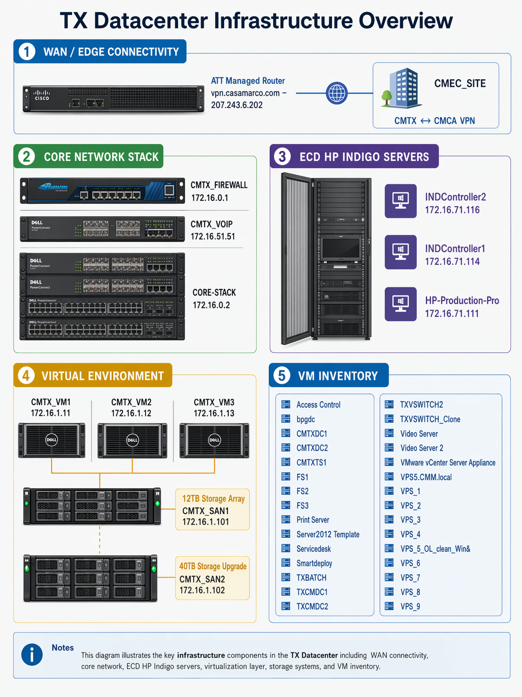

TX Datacenter & Virtual Environment
Core-stack, managed router, firewall, VoIP, HP Indigo systems, and virtual infrastructure documented together in a single reference view.
- Core network, perimeter, and voice segmentation
- Virtual host and storage layout with expansion path
- Production system integration with HP Indigo controllers